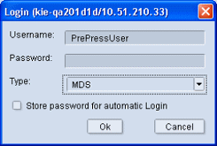

Когда программное обеспечение Prinect Shooter будет успешно установлено, в меню «Пуск Windows» вы найдете имя Prinect Shooter плюс соответствующие пункты меню. Вы также найдете папку «Prinect Shooter» на рабочем столе Windows; это имеет те же записи, что и меню «Prinect Shooter Start». Таким образом, вы можете выбрать, хотите ли вы вызывать различные приложения из меню «Пуск» или дважды щелкнув папку рабочего стола.
Меню Prinect MetaDimension Start содержит пункты меню, перечисленные ниже:
Сохранит текущую конфигурацию.
Восстановление сохраненной конфигурации.
Если вы хотите использовать другой Лицензионный сервер, который установлен во время установки, вы можете изменить соединение с Лицензионным сервером с помощью этого пункта меню.
Данный пункт меню позволяет изменять определенные системные папки, которые были настроены во время установки. Вы можете изменить следующие папки:
Вы начинаете Printmanager с этого пункта меню. Это позволяет вам определить все настройки конфигурации системы и контролировать обработку работы. Чтобы запустить Printmanager, необходимо запустить сервис Prinect Shooter.
Вы можете использовать эту программу для ручного запуска или остановки службы Prinect Shooter. Для начала просто нажмите зеленую «ключ стрелки», чтобы остановить нажатие красной «ключ стоп». Как правило, служба Prinect Shooter автоматически запускается при запуске компьютера.
Вы начинаете пользовательский интерфейс браузера с этого пункта меню. Это позволяет вам определять настройки конфигурации системы и контролировать обработку работы. Чтобы запустить пользовательский интерфейс браузера, необходимо запустить Prinect Shooter.
С помощью Remote Service Heidelberg предоставляет удаленный инструмент, который можно использовать для поддержки этого продукта. Свяжитесь с местным агентом Гейдельберга, если вам нужна поддержка.
Лицензионный менеджер устанавливается в дополнение к программному обеспечению Prinect Shooter. Таким образом, вы устанавливаете не только меню Prinect Shooter Start, но и меню Heidelberg Prinect Licensing Start. Вы можете позвонить менеджеру по лицензированию в этом меню.
При необходимости необходимо установить программное обеспечение Prinect TIFF Toolbox отдельно. Это приложение также будет иметь собственное меню «Пуск».
На ПК Prinect Shooter выберите «Start > All Programs > Heidelberg Prinect Shooter > Prinect Shooter Printmanager» в меню «Пуск Windows». Кроме того, вы можете запустить Printmanager в стартап-группе «Heidelberg Prinect Shooter» на рабочем столе.
Prinect Shooter работает только локально на ПК Prinect Shooter, потому что диспетчер двигателя напрямую связывается с устройством вывода через интерфейсную карту. Вы также можете «удалить управление» этим Prinect Shooter с другого компьютера, который также имеет установленную систему Prinect Shooter и к которой можно получить доступ в сети, выбрав этот компьютер в Printmanager там в «Администрация > Система > Сервер» и войдя в этот сервер (см. также Подключение к другому серверу Prinect Shooter).
Вы должны ввести имя пользователя и пароль после запуска пользовательского интерфейса (Printmanager или пользовательский интерфейс браузера). Пароли по умолчанию:
У пользователей разные разрешения:
|
Может редактировать задания и изменять приоритеты, но не удалять их. |
|
Вы можете включить «Хранить пароль для автоматического входа», если вы уверены, что не будет несанкционированного доступа к Prinect Shooter в вашей рабочей среде. В этом случае при следующем запуске Printmanager не запрашивается имя пользователя и пароль, если Printmanager подключен к тому же серверу. Затем Printmanager запускается с использованием имени пользователя и пароля последнего пользователя, вошедшего в систему.
В конфигурации системы рабочего процесса Prinect вы также можете войти в систему Prinect Shooter в качестве пользователя MDS (пользователь, настроенный в Магазине данных Prinect Master). Более подробную информацию об управлении пользователями MDS можно найти в документации на продукт Prinect, который использовался для установки Магазина данных Master (например). Prinect MetaDimension или менеджер интеграции Prinect.

 Предварительное условие: Вы должны сначала настроить соединение с Магазином данных (MDS) (см. Услуги Prinect).
Предварительное условие: Вы должны сначала настроить соединение с Магазином данных (MDS) (см. Услуги Prinect).
Copyright © 2013 Heidelberger Druckmaschinen AG